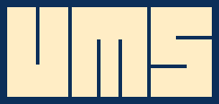
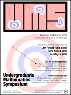

For the latest symposium information see the UMS home page.
The next UMS will be held at UIC on Saturday, October 5, 2013.

Download the symposium poster — then email us when you identify its mathematical theme!
What if we instead started with the geometry? Could we, from the points and lines, recover a field? Sometimes, yes! The geometries we start with will be "projective geometries" where any two lines meet, maybe "at infinity". How do we then get a field? Commutativity of multiplication --- among the other axioms for a field --- are encoded as gloriously complicated diagrams of points and lines. Desargues' theorem and Pappus' theorem show up to save the day.
A reference is Hilbert's Grundlagen der Geometrie.
| 8:15 - 8:50am | Sign-in and coffee in SEO 300 |
| Morning session — Plenary Lectures — SEO 636 | |
| 8:55am | Opening remarks |
| 9:00am | Lev Reyzin (UIC) — Three Great Ideas in Computing |
| 10:00am | Jim Fowler (Ohio State) — Projective Planes |
| 11:00am | Irina Nenciu (UIC) — Modeling with Randomness |
| 12:00pm | Lunch in SEO 300 |
| Afternoon Session 1 — Student lectures — SEO 636 | |
| 1:00pm | Ayah Almousa (Wisconsin-Madison) — Counting Polynomials with Given Root Multiplicities |
| 1:30pm | Derek Francour (Wisconsin-Madison) — Computing the Shape of Configuration Spaces |
| 2:00pm | Weston Ungemach (Chicago) — A Better Bound on the Size of Isospectral Families |
| 2:30pm | Kelsey DiPietro (UIC) — Negative Snell's Law |
| 3:00pm | Coffee break in SEO 300 |
| Afternoon session 2 — Student lectures — SEO 636 | |
| 3:30pm | Lisa Gullo (Dominican) — Optimal Paths in Graphs with Variable Weights |
| 4:00pm | Bradley Lewis Burdick (Ohio State) — A Simplicial Tutte Flows Conjecture |
| 4:30pm | Rachel Katz (Chicago) — The Colored Cubes Problem |